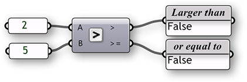
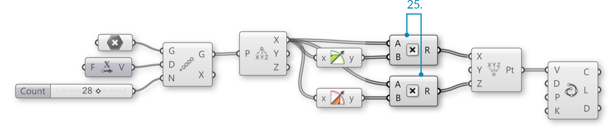

1.3.3. Mathematics, Expressions & Conditionals
Example files that accompany this section: Download
Knowing how to work with numeric information is an essential skill to master as you learn to use Grasshopper. Grasshopper contains many components to perform mathematical operations, evaluate conditions and manipulate sets of numbers.
In mathematics, numbers are organized by sets and there are two that you are probably familiar with:
Integer Numbers: […, -5, -4, -3, -2, -1, 0, 1, 2, 3, 4, 5, …]
Real Numbers: [8, …, -4.8, -3.6, -2.4, -1.2, 0.0, 1.234, e, 3.0, 4.0, …, 8]
While there are other types of number sets, these two interest us the most because Grasshopper uses these extensively. Although there are limitations in representing these sets exactly in a digital environment, we can approximate them to a high level of precision. In addition, it should be understood that the distinction between Integral types (integers) and Floating types (real numbers) corresponds to the distinction between discrete and continuous domains. In this chapter, we’re going to explore different methods for working with and evaluating various sets of numbers.
1.3.3.1. THE MATH TAB
Most of the components that deal with mathematical operations and functions can be found under the following sub-categories of the Math tab:

- Domains are used to define a range of values (formerly known as intervals) between two numbers. The components under the Domain tab allow you to create or decompose different domain types.
- In mathematics, a matrix is an array of numbers organized in rows and columns. This subcategory contains a series of utility tools to construct and modify matrices.
- Operators are used to perform mathematical operations such as Addition, Subtraction, Multiplication, etc. Conditional operators allow you to determine whether a set of numbers are larger than, less than, or similar to another set of numbers.
- Polynomials are one of the most important concepts in algebra and throughout mathematics and science. You can use the components found in this subcategory to compute factorials, logarithms, or to raise a number to the nth power.
- The script subcategory contains single and multi-variable expressions as well as the VB.NET and C# scripting components.
- These components allow you to solve trigonometric functions such as Sine,Cosine, Tangent, etc.
- The time subcategory has a number of components which allow you to construct instances of dates and times.
- The utility subcategory is a ‘grab bag’ of useful components that canbe used in various mathematical equations. Check here if you’re trying find the maximum or minimum values between two lists of numbers; or average a group of numbers.
1.3.3.2. OPERATORS
As was previously mentioned, Operators are a set of components that use algebraic functions with two numeric input values, which result in one output value.
Most of the time, you will use the Math Operators to perform arithmetical actions on a set of numbers. However, these operators can also be used on various data types, including points and vectors.

1.3.3.3. CONDITIONAL OPERATORS
Almost every programming language has a method for evaluating conditional statements. In most cases the programmer creates a piece of code to ask a simple question of “what if.” What if the area of a floor outline exceeds the programmatic requirements? Or, what if the curvature of my roof exceeds a realistic amount? These are important questions that represent a higher level of abstract thought. Computer programs have the ability to analyze “what if” questions and take actions depending on the answer to that question. Let’s take a look at a very simple conditional statement that a program might interpret: If the object is a curve, delete it. The piece of code first looks at an object and determines a single boolean value for whether or not it is a curve. There is no middle ground. The boolean value is True if the object is a curve, or False if the object is not a curve. The second part of the statement performs an action dependent on the outcome of the conditional statement; in this case, if the object is a curve then delete it. This conditional statement is called an If statement. There are four conditional operators (found under the Math/ Operators subcategory) that evaluate a condition and return a boolean value.
The Equality component takes two lists and compares the first item of List A and compares it to the first item of List B. If the two values are the same, then a True boolean value is created; conversely if the two values are not equal, then a False boolean value is created. The component cycles through the lists according to the set data matching algorithm (default is set to Longest List). There are two outputs for this component. The first returns a list of boolean values that shows which of the values in the list were equal to one another. The second output returns a list that shows which values were not equal to one another - or a list that is inverted from the first output.

The Similarity component evaluates two lists of data and tests for similarity between two numbers. It is almost identical to the way the Equality component compares the two lists, with one exception: it has a percentage input that defines the ratio of list A that list B is allowed to deviate before inequality is assumed. The Similarity component also has an output that determines the absolute value distance between the two input lists.

The Larger Than component will take two lists of data and determine if the first item of List A is greater than the first item of List B. The two outputs allow you to determine if you would like to evaluate the two lists according to a greater than (>) or greater than and equal to (>=) condition.

The Smaller Than component performs the opposite action of the Larger Than component. The Smaller Than component determines if list A is less than list B and returns a list of boolean values. Similarly, the two outputs let you determine if you would like to evaluate each list according to a less than (<) or less than and equal to (<=) condition.

1.3.3.4. TRIGONOMETRY COMPONENTS
Example files that accompany this section: Download
We have already shown that we can use an Expression (or Evaluate) component to evaluate conditional statements as well as compute algebraic equations. However, there other ways to calculate simple expressions using a few of the built in Trigonometry functions. We can use these functions to define periodic phenomena like sinusoidal wave forms such as ocean waves, sound waves, and light waves.

- Line
y(t) = 0- Sine Curve
y(t) = sin(t)- Helix
x(t) = cos(t)
y(t) = sin(t)
z(t) = b(t)- Spiral
x(t) = t*cos(t)
y(t) = t*cos(t)
In this example, we will use Grasshopper to construct various trigonometric curves using trigonometry function components found in the Math tab:
| 01. | Type Ctrl+N (in Grasshopper) to start a n]]]]]]]]]]ew definition | |
| 02. | Params/Geometry/Point – Drag and drop a Point parameter onto the canvas |  |
| 03. | Right click the Point parameter and click Set One Point – select a point in the Rhino viewport | |
| 04. | Vector/Vector/Unit X – Drag and drop the Unit X component to the canvas |  |
| 05. | Params/Input/Number Slider – Drag and drop the Number Slider component onto the canvas |  |
| 06. | Double-click on the Number Slider and set the following:
Lower Limit: 10 Upper Limit: 40 Value: 20 |
|
| 07. | Transform/Array/Linear Array – Drag and drop the Linear Array component onto the canvas |  |
| 08. | Connect the output of the Point parameter to the Geometry (G) input of the Linear Array component | |
| 09. | Connect the Unit Vector (V) output of the Unit X component to the Direction (D) input of the Linear Array componentYou should see a line of 20 points along the x axis in Rhino. Adjust the slider to change the number of points in the array. |
|
| 10. | Connect the Number Slider output to the Count (N) input of the Linear Array Component | |
| 11. | Curve/Spline/Interpolate – Drag and drop the Interpolate Curve component to the canvas |  |
| 12. | Connect the Geometry (G) output of the Linear Array component to the Vertices (V) input of the Interpolate Curve component |

We have just created a line by connecting an array of points with a curve. Let’s try using some of Grasshopper’s Trigonometry components to alter this curve:
| 13. | Vector/Point/Deconstruct – Drag and drop a Deconstruct component onto the canvas |  |
| 14. | Vector/Point/Construct Point - Drag and drop a Construct Point component onto the canvas |  |
| 15. | Maths/Trig/Sine - Drag and drop a Sine component onto the canvas |  |
| 16. | Disconnect the wire from the Vertices (V) input of the Interpolate Curve component.You can disconnect wires by holding down control and dragging, or by right-clicking the input and selecting Disconnect |
|
| 17. | Connect the Geometry (G) output of the Linear Array component to the Point (P) input of the Deconstruct component | |
| 18. | Connect the Point X (X) output of the Deconstruct component to the X coordinate (X) input of the Construct Point Component | |
| 19. | Connect a second wire from the Point X (X) output of the Deconstruct Component to the Value (x) input of the Sine component | |
| 20. | Connect the Result (y) output of the Sine component to the Y coordinate (Y) input of the Construct Point componentWe have now reconstructed our points with the same X values, modifying the Y values with a sine curve. |
|
| 21. | Connect the Point (Pt) output of the Construct Point component to the Vertices (V) input of the Interpolate component |
 </li>
</li>
You should now see a sine wave curve along the X axis in Rhino
| 22. | Maths/Trig/Cosine – Drag and drop a Cosine component to the canvas |  |
| 23. | Connect a third wire from the Point X (X) output of the Deconstruct Component to the Value (x) input of the Cosine component | |
| 24. | Connect the Result (y) output of the Cosine component to the Z coordinate (Z) input of the Construct Point component |
 </li>
</li>
We have now created a 3D helix
| 25. | Maths/Operators/Multiplication – Drag and drop two Multiplication components onto the canvas |  |
| 26. | Connect wires from the Point X (X) output of the Deconstruct component to the (A) input of each Multiplication component | |
| 27. | Connect the Result (y) output of the Sine component to the (B) input of the first Multiplication component | |
| 28. | Connect the Result (y) output of the Cosine component to the (B) input of the second Multiplication component | |
| 29. | Disconnect the wire from the Y Coordinate (Y) input of the Construct Point component | |
| 30. | Connect the Result (R) output of the first Multiplication component to the X Coordinate (X) input of the Construct Point component | |
| 31. | Connect the Result (R) output of the second Multiplication component to the Z Coordinate (Z) input of the Construct Point component |

You should now see a spiral curve

1.3.3.5. EXPRESSIONS
Example files that accompany this section: http://grasshopperprimer.com/appendix/A-2/1_gh-files.html
The Expression component (and its brother the Evaluate component) are very flexible tools; that is to say that they can be used for a variety of different applications. We can use an Expression (or Evaluate component) to solve mathematical algorithms and return numeric data as the output.

In the following example, we will look at mathematical spirals found in nature and how we can use a few Functions components to create similar patterns in Grasshopper. We will build on our trigonometric curves definition as a starting point.
| 01. | Open your Trigonometric curves Grasshopper definition from the previous example | |
| 02. | Delete the Sine, Cosine, Multiplication, and Interpolate components | |
| 03. | Params/Input/Number Slider – Drag and drop a Number Slider onto the canvas | |
| 04. | Double-click on the Number Slider and set the following:
Lower Limit: 0.000 Upper Limit: 1.000 Value: 1.000 |
|
| 05. | Connect the Number Slider to the Factor (F) input of the Unit X component.This slider allows you to adjust the distance between the points in the array. |
|
| 06. | Maths/Script/Expression – Drag two Expression components onto the canvas |  |
| 07. | Double-click the first Expression component to open the Expression Editor and change the expression to: x*sin(x) |
|
| 08. | Double-click the second Expression component to open the Expression Editor and change the expression to: x*cos(x) |

Double click the Expression component to open the Grasshopper Expression Editor
| 09. | Connect two wires from the Point X (X) output of the Deconstruct component to the Variable x (x) input of each Expression component | |
| 10. | Connect the Result (R) output of the first Expression component to the X coordinate (X) input of the Construct Point component | |
| 11. | Connect the Result (R) output of the second Expression component to the Y coordinate (Y) input of the Construct Point componentWe have replaced the Trigonometry functions and multiplication operators with the expression components for a more efficient definition. |
|
| 12. | Mesh/Triangulation/Voronoi – Drag and drop the Voronoi component onto the canvas |  |
| 13. | Params/Input/Number Slider – Drag and drop a Number Slider onto the canvas | |
| 14. | Double-click on the Number Slider and set the following:
Lower Limit: 1 Upper Limit: 30 Value: 30 |
|
| 15. | Connect the Number Slider to the Radius (R) input of the Voronoi component | |
| 16. | Connect the Point (Pt) output of the Construct Point component to the Points (P) input of the Voronoi component |

You can create different Voronoi patterns by manipulating the Factor, Count, and Radius sliders. Below are three examples:

- Factor = 1.000, Radius = 15
- Factor = 0.400, Radius = 10
- Factor = 0.200, Radius = 7